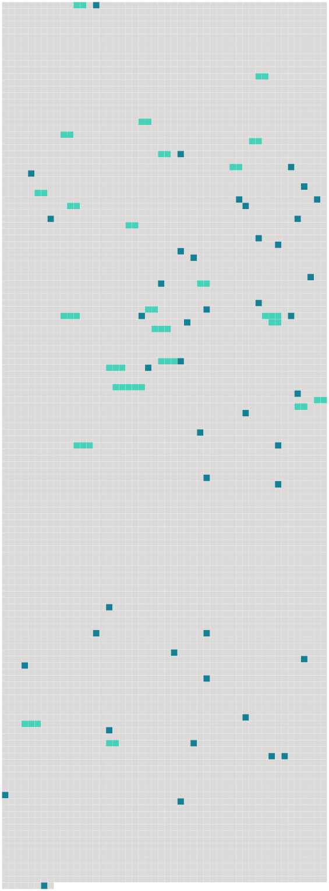

Longueur nb maillons : 68 mentions |
|
Ensuite, je décidai de me cacher avec ma fille dans [cette ville] , [où] personne ne pouvait avoir l'idée de venir me chercher, sous le faux nom que j'avais pris. [31 phrases]
L'abbé l'ouvrit et lut ce qui suit : [15 phrases]
» [2 phrases] Tous les habitants de [cette ville] , à l'exception d'un seul, étaient heureux de me confier une charge aussi importante. [2 phrases] Mais permettez -moi de vous dire que vous avez de singulières manières d'agir, dans [cette ville] …… [3 phrases] Je dois, d'abord, vous raconter l'origine de [cette ville] ; [elle] ne date que de deux ans. [4 phrases] [Notre ville] , monsieur l'abbé, je vous [la] ferai voir demain, et je suis certain qu' [elle] vous intéressera. [3 phrases] oui, monsieur l'abbé, vous pourriez ajouter au bonheur de tous les habitants de [Némoville] , en acceptant de devenir le curé de [cette ville] [3 phrases] — « Je ne vous ai pas dit, sans doute, la raison qui me pousse à vous faire cette offre, c'est que tous les habitants de [Némoville] appartiennent à la religion catholique romaine, et que vous n' [y] manqueriez pas de bien à faire. Il y a dans [cette ville] des enfants nés depuis la fondation, et qui n'ont pas encore reçu le baptême, et, si vous aviez refusé de venir [ici] , ce soir, M. Richard serait mort sans recevoir les consolations de la religion. [2 phrases]
Il tendit la main au gouverneur en disant : [1 phrases] Vous devenez donc, dès ce soir, curé de [Némoville] [1 phrases] Demain, je vous ferai visiter [la ville] [6 phrases]
Roger présenta son ami au curé, qui lui fit aussitôt cette remarque en souriant :
»
Le nouveau curé ne put s'empêcher de rire de cette boutade, et répliqua que, sans doute, quelques-uns des habitants de [Némoville] avaient dû connaître ces dangereux bipèdes sur la terre, et n'avaient trouvé rien de mieux pour leur échapper que de s'enfoncer sous l'eau. On prolongea le déjeuner, qui fut des plus joyeux — on n'avait pas l'avantage d'un nouvel hôte souvent à [Némoville] — et le curé plut à Roger et à Paul par son esprit autant que par sa bonté, dont il donna bientôt des preuves. [5 phrases]
»
» … Vous avez nommé [votre ville] , je le vois, d'après le capitaine Nemo. [7 phrases]
»
Chacun était chez soi dans son sous-marin ; les couloirs étaient les rues de [cette ville]
On n'était pas prisonnier à [Némoville] : chaque sous-marin se détachait facilement des couloirs extérieurs et pouvait seul remonter à la surface de la mer, quand il le désirait.
Quelquefois, [la ville entière] montait à la surface de la mer, renouveler [sa] provision d'air ; et c'était un spectacle bien étrange que de voir surgir de l'eau [cette île artificielle] , [qui] pouvait se déplacer à volonté, changer de localité, s'approcher de la côte ou bien replonger au fond de l'Océan. [1 phrases]
ils étaient bien heureux les gens de [Némoville] !
La résidence du gouverneur était à l'une des extrémités de [la ville] ; les autres résidences se groupaient comme dans les rues d'une véritable ville. L'abbé Bernard, accompagné de Paul et de Roger, fit la visite de [sa nouvelle paroisse] , et fut accueilli partout avec des démonstrations de la plus vive joie. [12 phrases] Au moment où les voyageurs allaient se rembarquer, cet homme vint à eux et leur dit : « Est -il vrai qu'il existe [une ville sous-marine] [où] l'on peut vivre en paix, loin de toutes les conventions du monde, loin de toutes les niaiseries et de toutes les faussetés qui fleurissent sur la terre??
» [3 phrases] — « Un vrai nom de chez nous, riposta Paul, un nom tout à fait comme il faut, dans [une ville sous les eaux] [3 phrases]
» [3 phrases]
Il était au centre de [la ville] et il semblait aussi grand que le « Nautilus », mais comme ni Roger ni Paul n'avait proposé de le visiter, le prêtre n'osa pas le demander.
L'abbé Bernard était très content d'avoir accepté de devenir curé de [cette ville] [4 phrases] Un seul habitant de [Némoville] avait accès auprès d'elle : le docteur Desmarais. [4 phrases] Il y avait deux jours que le curé Bernard était à [Némoville] , quand Roger lui proposa de faire une petite excursion de pêche à la surface de la mer. [2 phrases]
Quand on eut une provision considérable de poissons de toutes sortes, on retourna à [la ville sous-marine] [1 phrases] Or Turko était un chien sage et docile, très populaire à [Némoville] , il était si bien établi que Turko n'aboyait jamais sans de bonnes raisons, qu'un hurlement du chien fidèle était devenu pour son maître un signal certain qu'il se passait quelque chose d'extraordinaire. [8 phrases] — « Un canot vide, dit Paul, remorquons -le jusqu'à [Némoville] [2 phrases]
On se hâta de transporter la naufragée à [Némoville] , et on accosta à la résidence de Marcelle, où le prêtre suggéra de laisser la malade. [30 phrases] — « C'est le gouverneur de [Némoville] , dit Marcelle, qui demande à être reçu ; il vint souvent », ajouta-t -elle, en baissant les yeux, comme si elle eût eu peur que Gaétane y pût lire le mensonge qu'elle faisait, en assurant que le gouverneur venait souvent chez elle. [6 phrases] — « Mademoiselle, j'espère que vous ne vous ennuyez pas à [Némoville] ?? [1 phrases] non, répliqua-t -elle, on est si bien [ici] , je me sens si en sûreté auprès de Marcelle …… [3 phrases]
Lorsque Roger reprit le chemin du « Nautilus, » il était distrait et préoccupé, ce qui n'était pas dans ses habitudes ; en entrant chez lui, il rencontra Paul à qui il dit d'où il venait, et celui -ci lui répondit : [7 phrases]
Quiconque eût jeté un coup d'œil sur [Némoville] , eût envié le sort de [ses] habitants. [5 phrases]
D'un autre côté, ce n'était plus un secret dans [Némoville] que le docteur Desmarais était très assidu auprès de la belle étrangère ; on le voyait souvent se diriger vers la demeure de Marcelle, mais on savait que ce n'était plus à Mlle Richard qu'il pensait. [10 phrases] C'était la veille de Noël ; il y avait juste deux mois que l'abbé Bernard avait accepté la charge de curé de [Némoville] [1 phrases] Dès son arrivée, à [la ville sous-marine] , le curé s'était préoccupé d'improviser une chapelle, où il pourrait dire sa messe chaque matin. [1 phrases]
On n'y était pas grandement, surtout le dimanche, car les habitants de [Némoville] aimaient à assister à la messe et quelques-uns étaient obligés d'entendre l'office divin dans le couloir. [2 phrases] » Le curé accepta, et Roger le conduisit vers le centre de [la ville] Tout le monde paraissait gai, ce soir -là à [Némoville] [4 phrases]
» [11 phrases] La cloche de l'église de [Némoville] se fait entendre. [2 phrases] On avait fait transporter l'orgue du « Nautilus » dans l'église et préparé une belle messe, car les musiciens ne manquaient pas à [Némoville] [23 phrases] Monsieur le curé, demanda, tout à coup : « M. Duflot, cette jeune fille, qui a si bien chanté « Minuit Chrétiens », a-t -elle ses parents à [Némoville] ?? |
 |
Il est possible de télécharger la ressource sur la page Ortolang |
Si vous avez des questions ou vous voyez des erreurs, merci d'envoyer un mail à silvia.federzoni89@gmail.com |